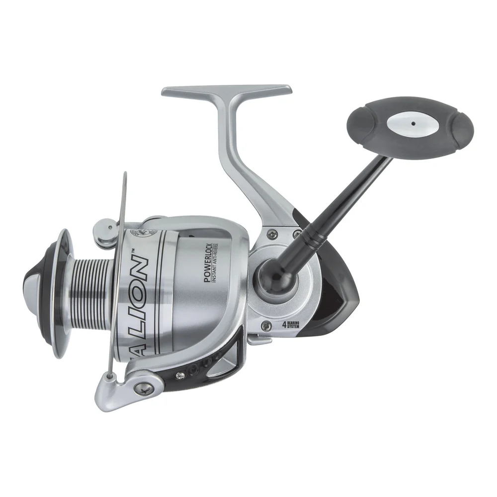

ReelCalc Reel Setup Guide
Offshore Angler Sea Lion Spinning Reel 7000 Line Capacity & Reel Setup Guide
The Offshore Angler Sea Lion Spinning Reel 7000 (SLS70) is a 7000-size spinning reel. It weighs 25 oz, brings in 37 inches of line with each handle turn, and has a listed maximum drag of 40 lb. For surf or pier fishing, allow enough line for your cast with some left for a fish's run. Fill the spool with main line, or use backing under the amount you want to fish. The preloaded calculator below helps estimate either setup for this reel.